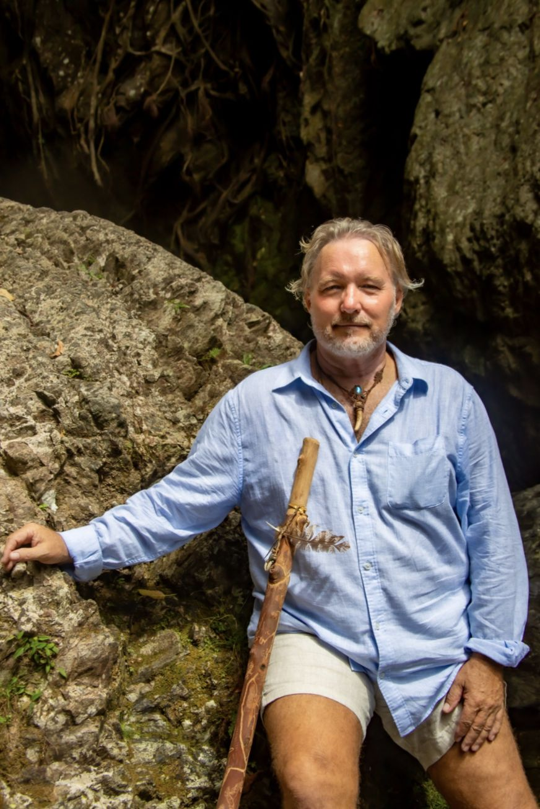

Why this matters to me
Born in the mid-60s. Now thriving in my 60s.
I've spent most of my life building homes and timber structures with my hands, and most of my mornings in the ocean. At 61, I'm still building. These days it's strength, health, relationships and community.
My mornings start the same way: Kundalini yoga, the sunrise, then the gym or the pool. I see wellbeing as many pieces of one picture, and learning about how the body works at the cellular level is one piece I've found fascinating for over a decade.
It starts with salt water
The redox supplement I take each day begins as salt and purified water, transformed through a patented process developed by ASEA. For a bloke who's always been drawn to the sea, I love that.
I've been with ASEA for 12 years, and every month I give to Advancing Life, its foundation supporting families and communities around the world.